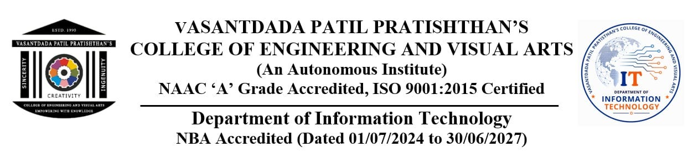

A Modular Object-Oriented System in Core Java with File Persistence & Cloud Synchronization
| Student ID | Student Name |
|---|---|
| VU4F2526072 | PRATIK ATPADKAR |
| VU4F2526066 | HARSH TIWAR |
| VU4F2526062 | PARTH GADADHE |
Notice, User, Role).
BufferedReader and PrintWriter streams.
| Sr. No. | Title: | Publication | Author & Year | Methodology: | Key Findings: |
|---|---|---|---|---|---|
| 1 | Digital Campus Notice Dissemination | IEEE Access | Sharma et al. (2021) | Client-server web portal with centralized database | High operational cost; lacks local offline persistence during network outages. |
| 2 | Smart Notice Board using IoT Display | IJERT | Patel & Deshmukh (2022) | Raspberry Pi & LED matrix display board | High hardware installation & maintenance cost; no search capability for students. |
| 3 | Role-Based Access in Higher Education | Springer CS | Gupta & Rao (2023) | RBAC security models in academic portals | Demonstrated privilege separation; lacks lightweight file failover mechanics. |
| 4 | Campus Communication Bottlenecks | Elsevier CIE | Fernandez et al. (2024) | Empirical survey of 1,200 university students | 41% of students missed critical deadlines due to unorganized messaging group noise. |
| Key Evaluation Metric | Physical Notice Board | WhatsApp / Telegram | Standard ERP | Campus Notify (Ours) |
|---|---|---|---|---|
| Role-Based Verification | None | Low / Open | High (Rigid) | Strict RBAC with Audit Trail |
| Category & Priority Filtering | None | None (Linear) | Complex / Cluttered | Instant Multi-Category Badges |
| Sub-Second Search Engine | None | Noisy Text Search | Slow DB Queries | Sub-100ms In-Memory Filter |
| Offline Data Persistence | Physical only | Chat Cache only | None (Server-dependent) | Dual-Layer (Flat-File + LocalStorage) |
| Information Clutter Level | High (Paper overlays) | Extreme (Chat noise) | Moderate | Zero Clutter (Authoritative Only) |
• Notice.java: Encapsulates title, category, priority, date, author, and status.
• User.java & Role.java: Enforces RBAC identity boundaries.
• Enums: Category (Academic, Exam, Placement, Events) and Priority (Urgent, High, Normal).
• Terminal CLI Driver: Interactive Scanner menu with ANSI color formatting for terminal execution.
• Modern Web Dashboard: Responsive semantic HTML5, CSS3 Grid, sticky modal dialogs, and instant search bars.
• NoticeService.java: Executes CRUD, search, priority sorting, and validation rules.
• FileStorageEngine.java: Java stream persistence reading and writing delimited records.
• Google Firebase Cloud Firestore snapshot listeners for multi-device live sync.
• Browser LocalStorage fallback ensuring full offline viewing when disconnected.
Notice.java are declared private. Data mutation is strictly governed by public getters and setters with internal string sanitization.
ArrayList & Iterator):
Notices are managed dynamically in ArrayList<Notice>. Safe traversal and removal use Java Iterator to avoid ConcurrentModificationException.
BufferedReader and PrintWriter to serialize notices to notifications_data.txt using delimited tokens (#DATA#), ensuring zero data loss on restart.
role === 'ADMIN'); regular students view a clean Academic Royal Blue theme.
https://campnotify-eef91.web.app with continuous cloud Firestore sync.
| Phase / Week | Planned Activity Description | Target Date | Status |
|---|---|---|---|
| Weeks 1 – 2 | Domain selection, survey of campus announcement bottlenecks, team formulation & literature survey | 08/07/2025 - 15/07/2025 | Completed |
| Weeks 3 – 4 | System Requirement Specification (SRS), hardware/software constraints, JDK setup & UML architecture | 22/07/2025 - 29/07/2025 | Completed |
| Weeks 5 – 6 | Core Java Model classes implementation, service layer, file persistence engine (BufferedReader/PrintWriter) | 05/08/2025 - 12/08/2025 | Completed |
| Week 7 | Review – I Evaluation presentation & project synopsis assessment before faculty panel | 19/08/2025 | Completed |
| Weeks 8 – 10 | Console CLI driver interactive menu, Web dashboard UI (HTML5/CSS3), and Firebase real-time cloud sync | 26/08/2025 - 09/09/2025 | Completed |
| Weeks 11 – 13 | 92 Automated test suite execution, Review – II presentation, documentation compilation & viva rehearsal | 16/09/2025 - 30/09/2025 | Completed |
test_complete_suite.js):
• Model Integrity & Input Validation (14 tests): Entity construction, null checks, date parsing.test_capacity_and_stress.js):
• Multi-Threaded Dispatch: 50 concurrent notice publish operations without lost updates.1. Herbert Schildt, Java: The Complete Reference, 12th Edition, McGraw-Hill Education, 2021.
2. Joshua Bloch, Effective Java, 3rd Edition, Addison-Wesley Professional, 2018.
3. University of Mumbai, Syllabus for Second Year Information Technology (Semester III & IV), 2024–2025.
4. Oracle Corporation, Java Platform Standard Edition 17 & 21 API Documentation, docs.oracle.com.
5. IEEE Computer Society, Software Engineering Standards & Design Patterns Handbook, 2024.
Questions & Feedback Welcome
Live Web Application: https://campnotify-eef91.web.app | GitHub: ATP0925/CampusNotify-Java-Mini-Project